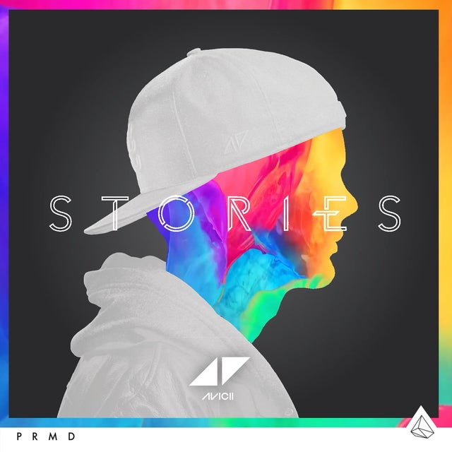

Play
Play
Play

Explore yourself in
Music
Up to this point, you have been listening to the music of other people in places mostly outside your own life and experience. Now is the moment to realize that your life is also bound up with music, that you are as “traditional” a person as any found in this book, and that your music, be it rap, ragtime, or Rachmaninoff, resonates within the larger culture in which you live. This chapter is offered as a guide to self-exploration through music.
Learn More